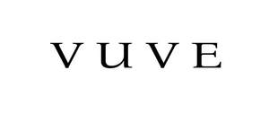

Trade Mark Journal No.2025/015 11 April 2025
UK00004179421 26 March 2025 (14,18,25,35)

- Class 14
- "Alloys of precious metal; Jewellery rolls; Jewellry; Precious stones; Emerald; Jade; Watches and clocks; Watches; Electric timepieces; Straps for wristwatches; Articles of jewellery made of precious metal alloys; Gold jewellery; Figurines of precious stones; Enamelled jewellery; Jewellery articles; Fittings for watches; Jewellery fashioned from bronze; Mechanical watches; Jewellery made of crystal; Jewellery made from silver. .
- Class 18
- Purses; Bags made of imitation leather; Tote bags; Backpacks; All-purpose leather straps; Briefcases [leather goods]; Hides; Handbags; Travelling bags; Worked or semi-worked hides and other leather; Waist packs; Luggage, bags, wallets and other carriers; School bags; Purses [leatherware]; Imitations of leather; Industrial packaging containers of leather; Gym bags; Leather shoulder belts; Athletic bags; Attaché bags .
- Class 25
- Clothing; Clothing for children; Clothing made of fur; Knitwear [clothing]; Chemise tops; Jackets; Aprons [clothing]; Footwear; Fabric belts [clothing]; Leather shoes; Athletic footwear; Petti-pants; Skirts; Sleepwear; Uniforms for commercial use; Waterproof shoes; Articles of underclothing; Socks; Clothing for sports; Dress suits. .
- Class 35
- Advertising; Administration of the business affairs of franchises; Preparing promotional and merchandising material for others; Advisory services relating to the purchase of goods on behalf of others; Marketing, advertising and promotion services; Marketing; Business and market research; Providing online marketplaces for sellers of goods and or services; Management advice relating to the recruitment of staff; Advertising services relating to the recruitment of personnel; Commercial information provided by means of a computer database; Updating and maintenance of data in computer databases; Accountancy; Accounting services for mergers and acquisitions; Retail services for pharmaceutical, veterinary and sanitary preparations and medical supplies; Advertising services relating to pharmaceuticals; Advertising services relating to jewelry; Advertisement for others on the Internet; Interviewing services [for personnel recruitment]; Administration relating to marketing. .
ABBOTT SANAG (UK) GROUP CO LTD
Representative: Marks & Us Lawyers Marcas y Patentes